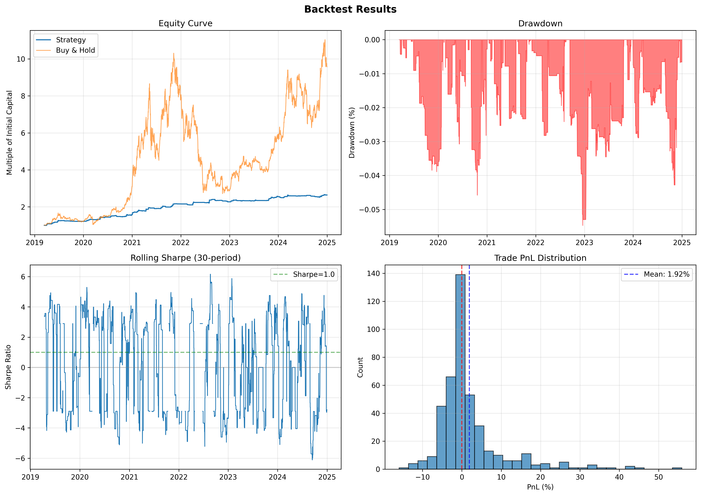

System Architecture
The project is structured into modular components to support historical backtesting and live execution environments without altering the core signal logic:
- Data Pipeline: Historical data ingestion via the CCXT library, incorporating pagination, rate limit handling, and alignment with asset listing dates.
- Signal Generator: The primary signal model. Requires concurrent validation across three indicators (ROC, MACD, RSI) for entry generation. Implements a long-only constraint for compatibility with standard spot execution.
- Risk Management: Volatility-adjusted position sizing model utilizing z-scores of signal strength. Controls portfolio-level constraints including maximum open positions, stop-loss thresholds, and global drawdown limits.
- Backtesting Engine: Event-driven simulator modeling slippage, trading fees, and execution constraints over historical datasets.
- Validation Framework: Implementation of strict out-of-sample holdout validation to discover robust parameters without hindsight bias.
Strategy Logic
The system implements a trend-following heuristic based on the following rules:
- Primary Trigger: The daily Rate of Change (ROC) must exceed a specified threshold.
- Confirmation: The MACD must align with the directional vector of the trend.
- Veto Filter: The RSI must remain below the defined overbought threshold to restrict entries at upper range extremes.
- Execution & Exit: If all conditions are met, a LONG signal is generated. The position is closed dynamically upon MACD divergence, RSI overbought crossover, or execution of the dynamic stop-loss. During periods of negative momentum, the system maintains a 100% cash allocation.
Backtest Results (Out-of-Sample)
The strategy was evaluated over a 6-year historical period (2019-2024), encompassing multiple market regimes including high-volatility expansions and contraction phases.

Configuration: Modeled on a Long-Only setup on a 1-Day timeframe for assets including BTC/USD, ETH/USD, SOL/USD, SPY, QQQ, and TLT, incorporating 0.04% Fee + 0.05% Slippage assumption per execution.
Performance Metrics (2019-2024)
- Total Return: +163.92%
- Annualized Return: +18.37%
- Max Drawdown: -5.30%
- Sharpe Ratio: 1.46
- Sortino Ratio: 1.79
- Win Rate: 46.70% (424 Total Trades)
Note: The system's low drawdown profile (-5.30%) is a direct result of the long-only momentum constraint. During negative momentum regimes, the strategy holds a 100% cash allocation, eliminating market exposure.
Holdout Validation (2023-2024, unseen data): Annualized Return: 13.96% | Sharpe: 1.18 | Max Drawdown: -5.42%